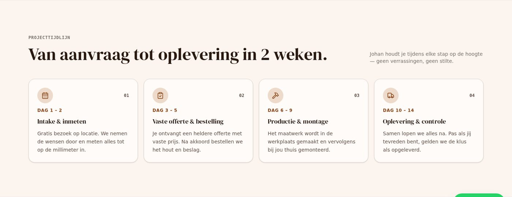

De stappen in de gegevens
src/data/timeline.ts bevat per vak de stappen: het icoon, de dag, de
titel en de toelichting. Het component tekent ze alleen nog maar.
De vier stappen van "van aanvraag tot oplevering" stonden in het component. Daardoor kon alleen de timmerman een tijdlijn hebben. De stappen staan nu in de gegevens, per vak, in de woorden van dat vak.
Wat er verandert
Deze PR verandert niets voor de bezoeker. Hij legt de basis voor de volgende: de aannemer krijgt een eigen tijdlijn, met eigen stappen, en dat kan alleen als de tekst niet meer in het component zit.
src/data/timeline.ts bevat per vak de stappen: het icoon, de dag, de
titel en de toelichting. Het component tekent ze alleen nog maar.
In de gegevens staat 'hammer' in plaats van een React-component. Zo
blijven de gegevens data — en niet een tweede versie van de interface.
Een vak zonder eigen stappen krijgt de algemene route: kennen, vaste offerte, uitvoeren, opleveren. Een site kan nooit breken omdat er een stap ontbreekt.
De dagen lopen van "Dag 1 – 2" tot "Dag 10 – 14". Dat is precies de belofte uit de pakketten: binnen twee weken opgeleverd. Er staat een proef op die dagen.
Hoe het eruitziet
Dit zijn de stappen van de timmerman. De aannemer krijgt straks zijn eigen, met woorden als "casco en fundering" in plaats van "productie en montage".
Gratis bezoek op locatie. We nemen de wensen door en meten alles tot op de millimeter in.
Je ontvangt een heldere offerte met vaste prijs. Na akkoord bestellen we het hout en beslag.
Het maatwerk wordt in de werkplaats gemaakt en vervolgens bij jou thuis gemonteerd.
Samen lopen we alles na. Pas als jij tevreden bent, gelden we de klus als opgeleverd.
De site in beeld
Eén echte schermafbeelding van de tijdlijn van de timmerman. Klik op de foto om hem groot te bekijken.

Let op De foto's in deze schermafbeeldingen zijn lokale plaatshouders. De site zelf laadt zijn foto's van Unsplash; in de sandbox is die dienst niet bereikbaar. Wat je hier ziet is de echte opmaak en de echte tekst.
De bestanden
| Bestand | Wat er verandert |
|---|---|
| src/data/timeline.ts | Nieuw. De stappen per vak, het icoon als naam, en de algemene route als terugval. |
| src/data/timeline.test.ts | Nieuw. Vier proeven: elke stap is compleet, elk vak krijgt stappen, de stappen komen uit de gegevens, de dagen lopen op volgorde. |
| src/components/tools/ProjectTimeline.tsx | Leest de stappen uit de gegevens en tekent de iconen. |
| ROADMAP.md | Rij 7.29 af en rij 8.11 af. |
De proeven
src/data/timeline.test.tssrc/data/timeline.test.tssrc/data/timeline.test.tssrc/data/timeline.test.tsEerlijk
De timmerman ziet precies dezelfde vier stappen als voorheen. Deze PR is een voorbouw: hij maakt de aannemer mogelijk, hij verandert de site niet.
Alleen de timmerman heeft nu een eigen tijdlijn, want alleen hij heeft de tijdlijn als gereedschap. De andere vakken hebben hun eigen tool: de dakcheck, de m²-calculator, de storingsmelding. De generieke route staat klaar voor het vak dat hem nodig heeft.